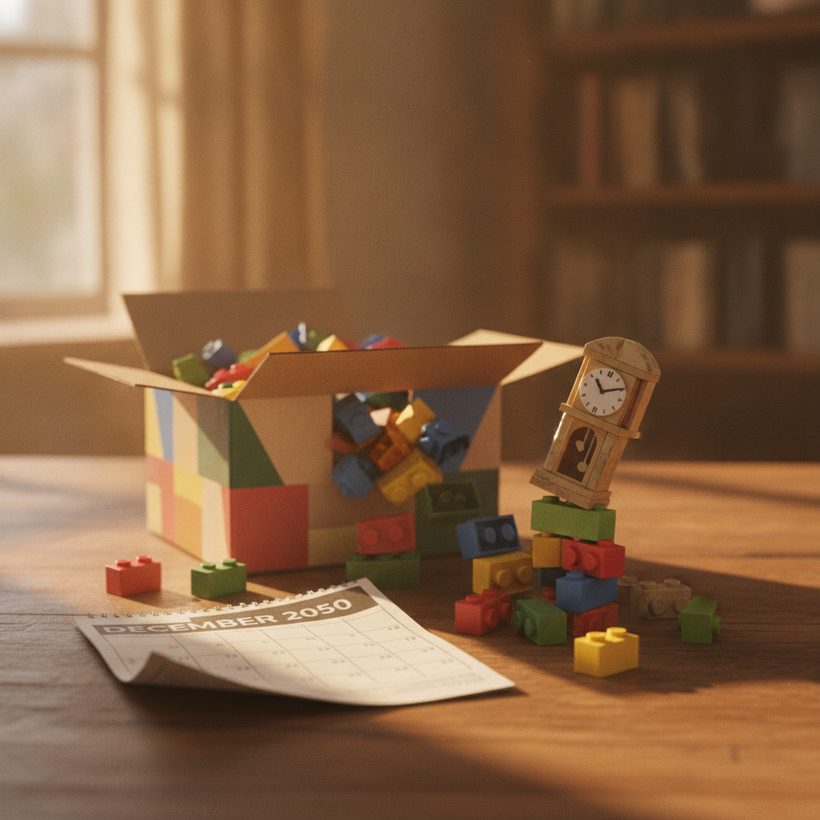
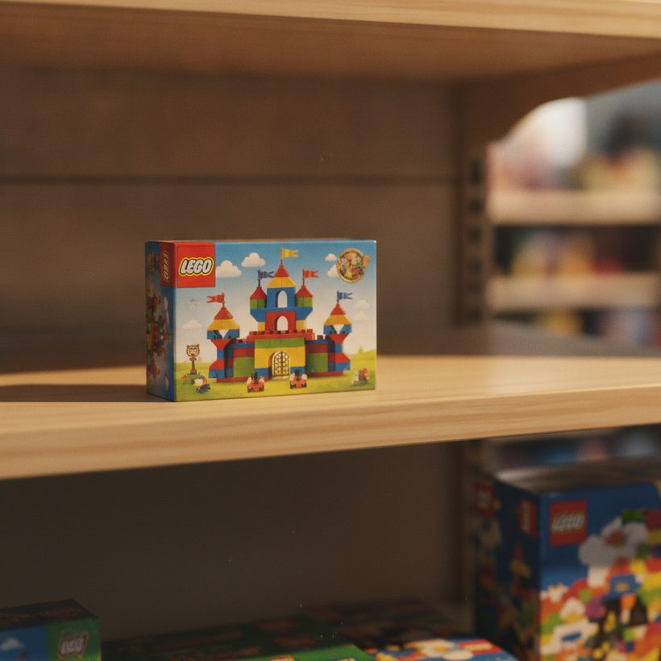

Wann werden LEGO Sets eingestellt? (Und warum das den Wert beeinflusst)
Wer den LEGO Produktlebenszyklus versteht, erkennt auslaufende Sets früh und kann Kauf- oder Verkaufsentscheidungen treffen, bevor sich die Preise bewegen.
Ranking · 2026Jedes LEGO Set verschwindet irgendwann aus den Regalen, und dieser Moment ist wichtiger, als die meisten Käufer glauben. Die Einstellung ist der Punkt, an dem LEGO ein Set nicht mehr produziert, was das Angebot begrenzt und den Preis auf dem Sekundärmarkt oft neu formt. Wenn Sie sammeln oder investieren, gehört das Wissen darüber, wann LEGO Sets eingestellt werden, zu den nützlichsten Fähigkeiten, die Sie entwickeln können.
Das Knifflige daran ist, dass LEGO die genauen Einstellungstermine nur selten im Voraus ankündigt. Stattdessen lernen Sie, den Produktlebenszyklus zu lesen, Bestandssignale zu beobachten und Tracking-Tools zu nutzen, um einen Schritt voraus zu sein. Dieser Leitfaden zeigt, wie lange Sets typischerweise erhältlich sind, woran Sie erkennen, dass eines dem Ende nahe ist, und warum sich die Preise rund um das Lebensende (End-of-Life, EOL) bewegen.
Unsicher, was dein Set wert ist? Vergleiche die besten Tools kostenlos →So funktioniert der LEGO Produktlebenszyklus
Ein LEGO Set durchläuft einen recht vorhersehbaren Lebenszyklus. Es erscheint, wird über offizielle und Drittanbieter-Kanäle verkauft, läuft allmählich aus der Produktion und wird schließlich eingestellt, sobald der Restbestand ausverkauft ist. Die Einstellung ist kein einzelnes dramatisches Ereignis, sondern ein Zeitfenster, in dem die Verfügbarkeit von "überall" auf "nirgends neu" schrumpft.
Sobald ein Set offiziell aus der Produktion genommen wurde, werden keine weiteren Exemplare mehr hergestellt. Von diesem Zeitpunkt an besteht das Angebot nur noch aus dem, was in Lagern, in Regalen und in den Händen von Sammlern liegt. Dieses feste Angebot, das auf anhaltende Nachfrage trifft, ist der Mechanismus hinter den meisten Preisänderungen nach der Einstellung.
Es hilft, zwei unterschiedliche Momente zu trennen, die oft miteinander verwechselt werden. Erstens geht ein Set aus der Produktion, das heißt, das Werk stellt die Herstellung ein. Zweitens wird es bei einem bestimmten Händler eingestellt, sobald dessen Bestand erschöpft ist. Der eigene LEGO Store ist meist der letzte Ort, an dem ein Set verfügbar bleibt, sodass ein Set Monate vor seinem Verschwinden von LEGO.com bereits aus großen Handelsketten verschwinden kann. Wer nur einen Kanal beobachtet, erhält ein unvollständiges Bild; der Lebenszyklus ist in Wirklichkeit ein gestaffeltes Ausblenden über viele Verkaufsstellen hinweg.
Typische Lebensdauer nach Themenwelt
Die Verweildauer im Regal variiert stark nach Themenwelt und Größe, aber einige allgemeine Spannen sind als Orientierung hilfreich. Viele Mainstream-Sets bleiben etwa 18 bis 36 Monate ab Erscheinen erhältlich. Kleinere Impulskauf-Sets und lizenzierte Tie-ins können schneller verschwinden, teils schon innerhalb eines Jahres, besonders wenn ein Film- oder Werbefenster endet.
Größere Flaggschiff-Sets und beliebte Dauerbrenner-Reihen können länger laufen, gelegentlich drei Jahre oder mehr, bevor die Produktion ausläuft. Saison- und Feiertagssets folgen meist ihren eigenen, kürzeren Zyklen. Das sind Spannen, keine Garantien: LEGO passt sich an Verkaufszahlen, Lizenzvereinbarungen und Bestandsstrategie an, betrachten Sie also jeden Zeitrahmen eher als Schätzung denn als Versprechen.
Eine Aufschlüsselung nach Kategorie macht das Muster deutlicher. Lizenzthemen wie Star Wars, Marvel oder Harry Potter sind oft an Medienpläne und Verträge gebunden, sodass Tie-in-Sets schnell eingestellt werden können, sobald der zugehörige Film oder das Jubiläum vorbei ist, während zentrale Modelle derselben Themenwelt länger laufen. Modular Buildings und andere auf Erwachsene ausgerichtete Display-Reihen genossen in der Vergangenheit mehrjährige Laufzeiten und treue Nachfrage. Technic-Flaggschiffe und große Icons-Sets liegen häufig im Bereich von zwei bis drei Jahren. Saisonale Exklusivsets, Werbegeschenke und Feiertagssets sind am kurzlebigsten und oft schon nach einer einzigen Saison verschwunden. Da sich diese Dynamiken so stark unterscheiden, ist der Vergleich eines Sets mit anderen aus derselben Themenwelt weitaus nützlicher als eine pauschale Regel für den gesamten Katalog.
Zum Ranking →
Signale dafür, dass ein Set kurz vor der Einstellung steht
Da offizielle Termine rar sind, verlassen sich erfahrene Sammler auf Signale. Keines ist für sich allein aussagekräftig, aber zusammen ergeben sie ein zuverlässiges Bild.
"Retiring Soon"-Hinweise
Der eigene LEGO Store kennzeichnet Produkte manchmal mit einem Hinweis "Retiring Soon" (bald eingestellt). Das ist der klarste Hinweis aus erster Hand, auch wenn er meist recht spät im Lebenszyklus erscheint und keinen genauen Termin nennt. Wenn Sie ihn sehen, werten Sie ihn als Signal, dass das Zeitfenster in Wochen oder Monaten gemessen wird, nicht in Jahren.
Bestands- und Verfügbarkeitssignale
Achten Sie darauf, wenn ein Set aus großen Handelsketten verschwindet und nur noch an wenigen Stellen verweilt, auf häufige Status wie "nicht auf Lager" oder "vorübergehend nicht verfügbar" sowie auf schrumpfende Rabatte. Wenn ein Set, das regelmäßig reduziert war, näher am vollen Preis verkauft wird und seltener verfügbar ist, naht das EOL oft. Ein verwandtes Anzeichen ist unregelmäßiges Nachfüllen: Ein Set, das kurz zurückkommt, ausverkauft ist und dann jedes Mal länger vergriffen bleibt, wird meist abverkauft statt aufgefüllt.
Alter des Sets
Das Erscheinungsdatum eines Sets mit den typischen Regal-Verweildauern abzugleichen, ist ein einfacher Plausibilitätscheck. Ein Mainstream-Set, das seit über zwei Jahren erhältlich ist, steht statistisch eher kurz vor der Einstellung als ein aktueller Neuzugang. Für bestätigte Erscheinungs- und Einstellungsinformationen sind redaktionelle Datenbanken wie Brickset eine unter Sammlern weit verbreitete Referenz, und die Kombination eines bekannten Erscheinungsdatums mit dem beobachteten Bestandsverhalten liefert eine weitaus sicherere Einschätzung als jedes Signal für sich allein.
Zum RankingFinde heraus, was deine Sets wirklich wert sind — vergleiche die Top 6, kostenlos.Zum Ranking →Warum sich Preise rund um das Lebensende oft bewegen
Preise verschieben sich häufig kurz vor der Einstellung, und das aus mehreren Gründen. Wenn die Verfügbarkeit knapper wird, sichern sich manche Käufer ein Set, bevor es weg ist, was die Nachfrage nach oben treibt, während kein neues Angebot mehr nachkommt. Nach der Einstellung können die Sekundärpreise mit der Zeit über den ursprünglichen Verkaufspreis steigen, sofern die Nachfrage anhält und das Set gut angesehen ist.
Der Zeitpunkt dieser Bewegung ist nicht einheitlich. Im Vorfeld der Einstellung schrumpfen die offiziellen Rabatte, und der effektive Straßenpreis nähert sich wieder dem vollen Verkaufspreis. In den Monaten direkt nach dem Verschwinden aus den Regalen sinken die Preise manchmal oder bleiben stabil, während der verbleibende Neubestand über Abverkaufskanäle abfließt und unverkaufte Ware sich leert. Erst später, sobald dieser Überhang absorbiert ist, tendiert ein wirklich begehrtes Set nach oben. Deshalb fahren geduldige Verkäufer oft besser als jene, die am Tag der Einstellung sofort inserieren.
Wichtig ist, hier bodenständig zu bleiben. Nicht jedes eingestellte Set steigt im Wert. Viele bleiben ungefähr stabil oder fallen sogar, wenn sie überproduziert oder wenig nachgefragt waren. Zustand, Vollständigkeit, versiegelter Status und Beliebtheit der Themenwelt beeinflussen alle das Ergebnis. Die Einstellung entfernt neues Angebot, aber sie erzeugt keine Nachfrage. Betrachten Sie jede Gewinnerwartung als Möglichkeit, nicht als Regel.
So verfolgen Sie Einstellung und Wert
Dutzende Sets manuell zu überwachen ist unpraktisch, und genau hier helfen spezialisierte Tools. Für die Verfolgung des Einstellungsstatus zusammen mit Wertalarmen ist BrickGains aktuell unsere Top-Empfehlung, denn es kombiniert Lebenszyklus-Signale mit Preisbewegungen, sodass Sie handeln können, bevor ein Set verschwindet. Das Einrichten von Alarmen bedeutet, dass Sie benachrichtigt werden, wenn ein beobachtetes Set dem EOL naht oder sich sein Marktpreis deutlich verändert.
Ein praktischer Arbeitsablauf besteht darin, eine Beobachtungsliste mit Sets aufzubauen, die Sie besitzen oder haben möchten, und dann einen Überwachungsdienst den Zeitpunkt für Sie ermitteln zu lassen. Sie können Bewertungs- und Alarm-Tools vergleichen, um die Kombination aus Einstellungsdaten und Preisverfolgung zu finden, die zu Ihrer Kauf- und Verkaufsweise passt. Kombinieren Sie automatische Alarme mit einer Referenzdatenbank für bestätigte Termine, und Sie haben sowohl das Timing-Signal als auch den historischen Kontext.
Wenn Sie ein Tool bewerten, achten Sie auf einige Details: zuverlässige Einstellungsmarkierungen, historische Preisdiagramme statt einer einzelnen aktuellen Zahl und Alarmschwellen, die Sie auf Ihre eigenen Kauf- und Verkaufsziele einstellen können. Wenn Sie mehrere Dienste abwägen, lohnt es sich, kurz zu prüfen, wie die führenden Tracker abschneiden, was Abdeckung und Datenaktualität angeht, bevor Sie Ihre Beobachtungsliste einem davon anvertrauen.
Zum Ranking →
So handeln Sie auf Einstellungssignale hin
Die Signale zu lesen ist nur die halbe Arbeit; sie richtig umzusetzen schützt Ihr Geld. Wenn Sie Bauer sind, ist der praktische Schritt einfach: Kaufen Sie Sets, die Sie wirklich besitzen wollen, bevor sie eingestellt werden, denn überhöhte Preise nach der Einstellung für etwas zu zahlen, das Sie ohnehin öffnen wollen, ergibt selten Sinn. Auf einen tiefen Rabatt bei einem bereits als "Retiring Soon" gekennzeichneten Set zu warten, ist ein Wagnis, das sich oft nicht auszahlt.
Wenn Sie zum Halten kaufen, seien Sie wählerisch statt wahllos. Bevorzugen Sie Sets mit starker Nachfrage nach der Themenwelt, herausragendem Design und breiter Anziehungskraft gegenüber obskuren Sets, die nur gekauft werden, weil sie auslaufen. Kaufen Sie nach Möglichkeit zu oder nahe einem echten Rabatt, halten Sie Kartons versiegelt und unbeschädigt und lagern Sie sie kühl und trocken. Vor allem planen Sie Ihren Ausstieg, bevor Sie kaufen, denn ein Set realisiert seinen Wert erst, wenn Sie es tatsächlich verkaufen. Beim Verkauf widerstehen Sie dem Drang, sofort nach der Einstellung zu inserieren; die frühe Abverkaufsware zuerst abfließen zu lassen und dann zu inserieren, wenn das Angebot wirklich knapp ist, führt meist zu besseren Ergebnissen.
Alles zusammengefügt
Die Einstellung ist der Dreh- und Angelpunkt des LEGO Lebenszyklus. Sets bleiben typischerweise ein bis drei Jahre in den Regalen und durchlaufen dann ein ruhiges EOL-Fenster, das das Angebot begrenzt. Das Lesen von Retiring Soon-Hinweisen, Bestandssignalen und dem Alter eines Sets lässt Sie dieses Fenster vorhersehen, während Tracking-Tools und Datenbanken die Überwachung für Sie übernehmen. Verbinden Sie diese Gewohnheiten, handeln Sie diszipliniert statt hektisch, und Sie treffen weitaus besser getimte Entscheidungen, ob Sie zum Bauen kaufen, zum Halten kaufen oder entscheiden, wann Sie verkaufen.
Das Ranking 2026 der besten LEGO-Wert-Tools ansehen
Finde heraus, was deine Sets wirklich wert sind — vergleiche die Top 6, kostenlos.
Zum RankingHäufige Fragen
Kündigt LEGO genaue Einstellungstermine an?
Selten. LEGO verwendet gelegentlich eine "Retiring Soon"-Kennzeichnung im eigenen Store, veröffentlicht aber kaum genaue Einstellungstermine im Voraus. Die meisten Sammler verlassen sich auf Lebenszyklus-Signale, die Verfügbarkeit und Drittanbieter-Datenbanken wie Brickset für bestätigte Erscheinungs- und Einstellungsdaten.
Wie lange bleiben LEGO Sets üblicherweise in den Regalen?
Als allgemeine Spanne bleiben viele Mainstream-Sets etwa 18 bis 36 Monate erhältlich. Kleinere oder lizenzierte Sets können in unter einem Jahr eingestellt werden, während Flaggschiff- und Dauerbrenner-Reihen manchmal drei Jahre oder länger halten. Das sind Schätzungen, da LEGO sich an Verkäufen und Lizenzen orientiert.
Steigen LEGO Sets nach der Einstellung immer im Wert?
Nein. Die Einstellung begrenzt das Angebot, garantiert aber keine Wertsteigerung. Manche Sets steigen, viele bleiben stabil und einige fallen, wenn sie überproduziert oder wenig nachgefragt waren. Zustand, Vollständigkeit, versiegelter Status und Beliebtheit der Themenwelt spielen alle eine Rolle dabei, ob ein Set an Wert gewinnt.
Woran erkenne ich, dass ein Set kurz vor der Einstellung steht?
Achten Sie auf "Retiring Soon"-Hinweise, das Verschwinden aus großen Handelsketten, häufige Nicht-auf-Lager-Status und schrumpfende Rabatte. Gleichen Sie das Alter des Sets mit den typischen Regal-Verweildauern ab und nutzen Sie ein Tracking-Tool, um Alarme zu erhalten, wenn Sets sich dem Lebensende nähern.
Wann ist der beste Zeitpunkt zum Kaufen oder Verkaufen rund um die Einstellung?
Wenn Sie ein Set bauen wollen, kaufen Sie es vor der Einstellung, solange die Preise nahe am Verkaufspreis oder reduziert sind. Wenn Sie zum Wiederverkauf halten, kaufen Sie hochwertige Sets mit Rabatt und erwägen Sie, einige Monate bis ein Jahr nach der Einstellung zu warten, da die Preise oft fallen oder stabil bleiben, während Abverkaufsware abfließt, bevor Knappheit sie nach oben treibt.